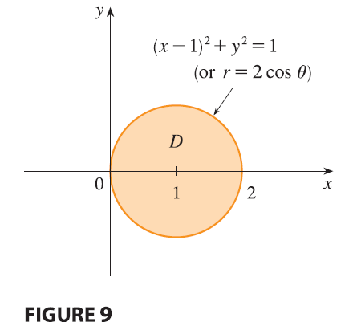
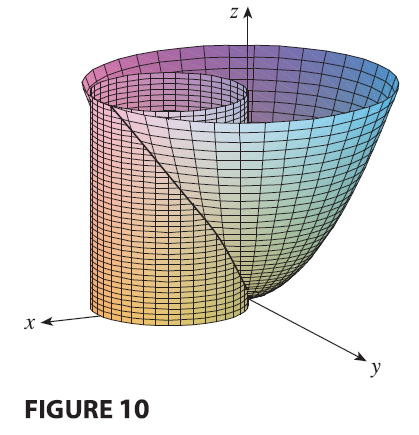

EXAMPLE 4 Find the volume of the solid that lies under the paraboloid \(z = x^2 + y^2\), above the \(xy\)-plane, and inside the cylinder \(x^2 + y^2 = 2x\).


SOLUTION The solid lies above the disk \(D\) whose boundary circle has equation \(x^2 + y^2 = 2x\) or, after completing the square, \[ (x - 1)^2 + y^2 = 1 \] In polar coordinates we have \(x^2 + y^2 = r^2\) and \(x = r \cos \theta\), so the boundary circle becomes \(r^2 = 2r \cos \theta\), or \(r = 2 \cos \theta\). Thus the disk \(D\) is given by \[ D = \{(r, \theta) | -\pi/2 \le \theta \le \pi/2, 0 \le r \le 2 \cos \theta\} \] and, by Formula 3, we have \[ V = \iint_D (x^2 + y^2) dA = \int_{-\pi/2}^{\pi/2} \int_0^{2 \cos \theta} r^2 r dr d\theta = \int_{-\pi/2}^{\pi/2} \left[ \frac{r^4}{4} \right]_0^{2 \cos \theta} d\theta \] \[ = \int_{-\pi/2}^{\pi/2} 4 \cos^4 \theta d\theta = 8 \int_0^{\pi/2} \cos^4 \theta d\theta = 8 \int_0^{\pi/2} \left( \frac{1 + \cos 2\theta}{2} \right)^2 d\theta \] \[ = 2 \int_0^{\pi/2} [1 + 2 \cos 2\theta + \cos^2 2\theta] d\theta = 2 \int_0^{\pi/2} \left[ 1 + 2 \cos 2\theta + \frac{1}{2}(1 + \cos 4\theta) \right] d\theta \] \[ = 2 \left[ \frac{3}{2}\theta + \sin 2\theta + \frac{1}{8}\sin 4\theta \right]_0^{\pi/2} = 2\left(\frac{3}{2}\right)\left(\frac{\pi}{2}\right) = \frac{3\pi}{2} \]